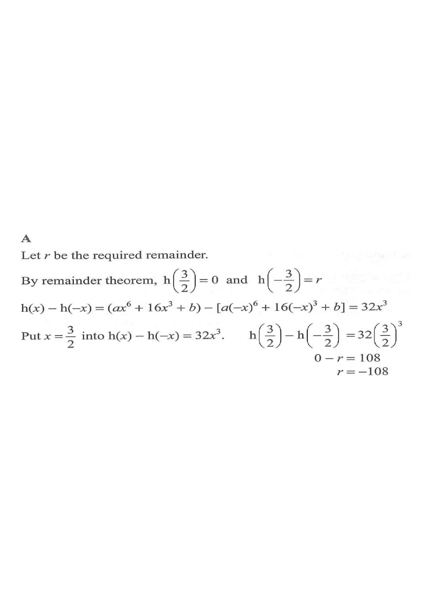

HKDSE Mathematics (Compulsory Part) Paper 2 — 2023 Q9
Topic 4: Polynomials • Remainder Theorem • Symmetry of Even & Odd Powers
Interactive Figure
Given: $h(x)$ divisible by $2x-3$Wanted: remainder of $2x+3$Key step: symmetry
Step 0 — Read the question: a degree-6 polynomial with only even powers of $x$ plus a constant.
[2023MC#9]
Let $h(x)=ax^{6}+16x^{3}+b$, where $a$ and $b$ are constants.
If $h(x)$ is divisible by $2x-3$, find the remainder when $h(x)$ is divided by $2x+3$.
A. $-108$
B. $-54$
C. $54$
D. $108$

Figure (original exam diagram)
1Apply the Remainder Theorem to the given condition.
$h(x)$ is divisible by $2x-3$, so $h\!\left(\tfrac{3}{2}\right)=0$.
Divisible by $(2x-3)$ means the root $x=\tfrac{3}{2}$ gives remainder $0$.
Remainder Theorem\(p(x)\div(ax-b)\ \Longrightarrow\ \text{remainder}=p\!\left(\tfrac{b}{a}\right)\)Divisible by \(2x-3\) means the remainder \(h\!\left(\tfrac32\right)\) equals 0.
2Let $r$ be the required remainder.
Dividing by $2x+3$ gives remainder $r=h\!\left(-\tfrac{3}{2}\right)$.
The divisor $2x+3=0 \Rightarrow x=-\tfrac{3}{2}$.
3Use the symmetry: only odd powers change sign.
Since $h(x)=ax^{6}+16x^{3}+b$ and $(-x)^6=x^6$, $(-x)^3=-x^3$:
Question. It is given that \(h(x)=ax^{6}+8x^{3}+b\), where \(a\) and \(b\) are constants, and \(h(x)\) is divisible by \(2x-3\). Find the remainder when \(h(x)\) is divided by \(2x+3\).
Show the worked solution
Step 1. By the Remainder Theorem, \(h\!\left(\tfrac32\right)=0\).
Step 2. The remainder on division by \(2x+3\) is \(r=h\!\left(-\tfrac32\right)\).
Step 3. Since \((-x)^{6}=x^{6}\) but \((-x)^{3}=-x^{3}\): \(h(x)-h(-x)=16x^{3}\).
Step 4. Put \(x=\tfrac32\): \(0-r=16\left(\tfrac32\right)^{3}=16\times\tfrac{27}{8}=2\times27=54\).